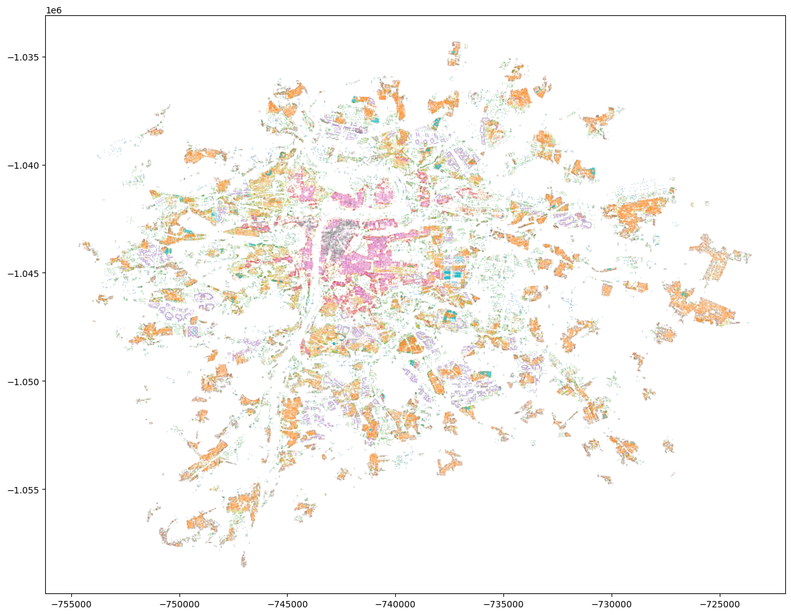
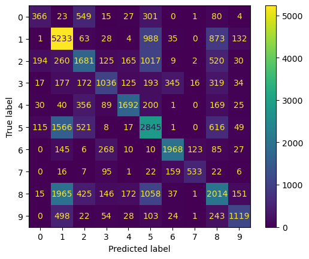
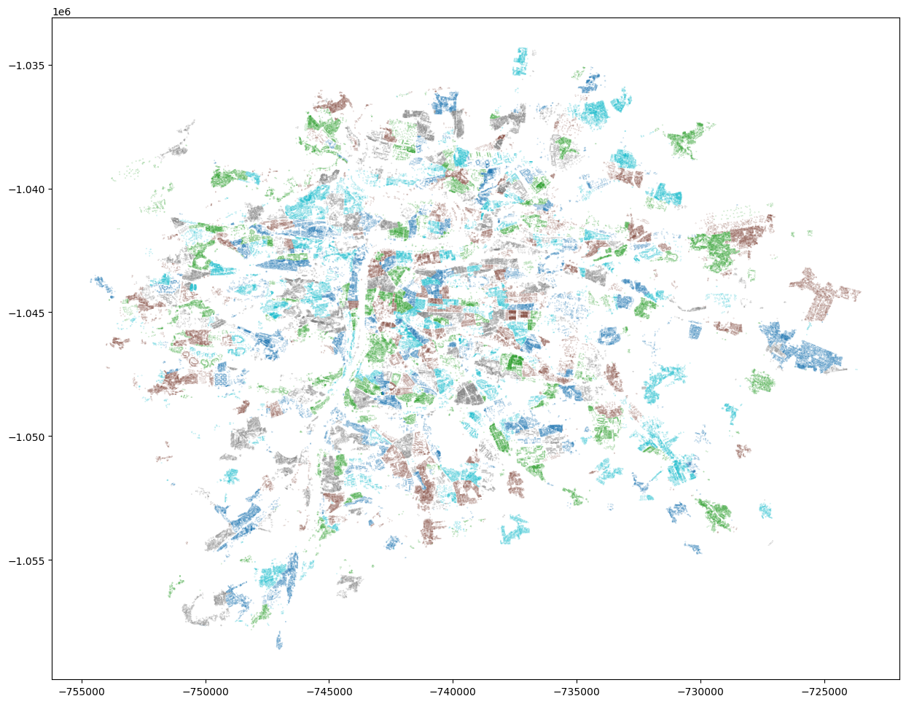

import geopandas as gpd
import pandas as pd
from sklearn import ensemble, metrics, model_selection, preprocessingbuilding_data = gpd.read_file("data/prg_building_locations.gpkg", engine="pyogrio")building_data.head()| cluster | floor_area_ratio | height | compactness | street_alignment | interbuilding_distance | block_perimeter_wall_length | NAZ_ZSJ | NAZ_KU | geometry | |
|---|---|---|---|---|---|---|---|---|---|---|
| 0 | 0 | 0.614375 | 23.458 | 0.747131 | 10.601522 | 37.185479 | 57.751467 | U cementárny | Radotín | POINT (-749841.681 -1052279.951) |
| 1 | 7 | 2.993299 | 16.099 | 0.469154 | 8.655982 | 8.547983 | 1033.921828 | Horní malostranský obvod | Malá Strana | POINT (-744432.289 -1042699.409) |
| 2 | 5 | 0.108374 | 3.673 | 0.498831 | 2.473966 | 26.135688 | 74.432812 | Dolní Měcholupy-střed | Dolní Měcholupy | POINT (-733300.261 -1048136.856) |
| 3 | 5 | 0.290723 | 9.097 | 0.627294 | 6.054875 | 32.423481 | 38.592030 | Trojský obvod | Troja | POINT (-742468.177 -1039691.997) |
| 4 | 3 | 0.017193 | 4.216 | 0.540439 | 0.134446 | 48.068409 | 49.125654 | Vrch Svatého kříže | Žižkov | POINT (-740093.985 -1043857.813) |
independent = building_data.drop(columns=["cluster", "geometry"])
independent[independent.columns] = preprocessing.robust_scale(independent)X_train, X_test, y_train, y_test = model_selection.train_test_split(independent, building_data["cluster"], test_size=.25)model = ensemble.RandomForestClassifier()
model.fit(X_train, y_train)RandomForestClassifier()In a Jupyter environment, please rerun this cell to show the HTML representation or trust the notebook.
On GitHub, the HTML representation is unable to render, please try loading this page with nbviewer.org.
RandomForestClassifier()
pred = model.predict(X_test)proba = model.predict_proba(X_test)metrics.accuracy_score(pred, y_test)0.5270104620998318metrics.cohen_kappa_score(pred, y_test)0.44674807434710917predicted = model_selection.cross_val_predict(model, independent, building_data["cluster"], cv=4)building_data.plot(predicted, categorical=True, figsize=(15, 15), markersize=.01)<Axes: >
cm = metrics.confusion_matrix(y_test, pred)
cmarray([[ 366, 23, 549, 15, 27, 301, 0, 1, 80, 4],
[ 1, 5233, 63, 28, 4, 988, 35, 0, 873, 132],
[ 194, 260, 1681, 125, 165, 1017, 9, 2, 520, 30],
[ 17, 177, 172, 1036, 125, 193, 345, 16, 319, 34],
[ 30, 40, 356, 89, 1692, 200, 1, 0, 169, 25],
[ 115, 1566, 521, 8, 17, 2845, 1, 0, 616, 49],
[ 0, 145, 6, 268, 10, 10, 1968, 123, 85, 27],
[ 0, 16, 7, 95, 1, 22, 159, 533, 22, 6],
[ 15, 1965, 425, 146, 172, 1058, 37, 1, 2014, 151],
[ 0, 498, 22, 54, 28, 103, 24, 1, 243, 1119]])metrics.ConfusionMatrixDisplay(cm).plot()<sklearn.metrics._plot.confusion_matrix.ConfusionMatrixDisplay at 0x150bca7d0>
Spatial cross-validation
building_data.NAZ_ZSJ.nunique()887building_data.NAZ_KU.nunique()112gkf = model_selection.StratifiedGroupKFold(n_splits=5)d = []
for i, (train, test) in enumerate(gkf.split(building_data, building_data.cluster, groups=pd.factorize(building_data.NAZ_ZSJ)[0])):
building_data.loc[test, "split"] = ibuilding_data.plot("split", categorical=True, figsize=(15, 15), markersize=.01)<Axes: >
train = building_data["split"] != 0
test = building_data["split"] == 0
X_train = independent.loc[train]
X_test = independent.loc[test]
y_train = building_data["cluster"].loc[train]
y_test = building_data["cluster"].loc[test]model = ensemble.RandomForestClassifier()
model.fit(X_train, y_train)RandomForestClassifier()In a Jupyter environment, please rerun this cell to show the HTML representation or trust the notebook.
On GitHub, the HTML representation is unable to render, please try loading this page with nbviewer.org.
RandomForestClassifier()
pred = model.predict(X_test)proba = model.predict_proba(X_test)metrics.accuracy_score(pred, y_test)0.4559122888468269metrics.cohen_kappa_score(pred, y_test)0.36167399241227804predicted = model_selection.cross_val_predict(model, independent, building_data["cluster"], cv=4)building_data.plot(predicted, categorical=True, figsize=(15, 15), markersize=.01)<Axes: >